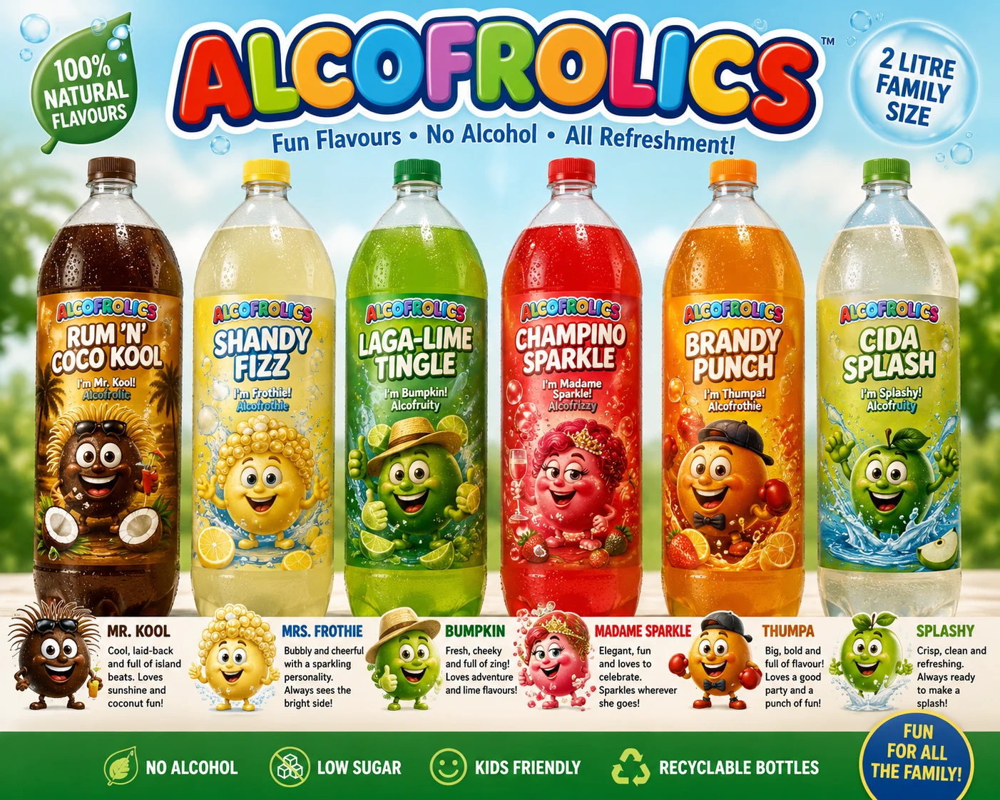
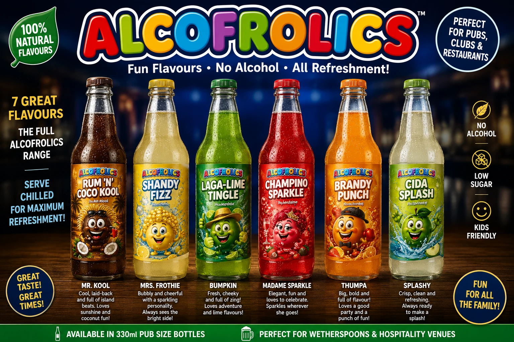
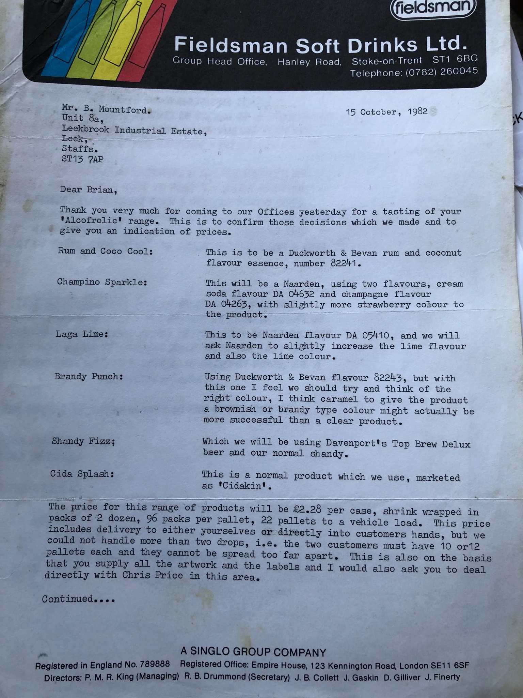

B.M. Product Creation · Archive Page 57
ALCOFROLICS
Fun flavours · No alcohol · All refreshment
A short archive flipbook featuring two range posters and an early flavour tasting record.
Original product creation by Brian Mountford
Alcofrolics · Page 57Turn the pages to view the full-size range artwork and the 1982 letter.

Family supermarket rangeSix illustrated flavours in 2-litre family-size bottles. The complete uploaded poster is shown without cropping.

Pub and hospitality range330 ml bottles presented for pubs, clubs and restaurants. The complete uploaded poster is shown without cropping.

Fieldsman Soft Drinks Ltd. · 15 October 1982Archived flavour tasting and selection correspondence. Any prices printed in the historical letter are from 1982 and are not current.
From the tasting notes
The 1982 letter records tasting and flavour decisions for:
- Rum and Coco Cool
- Champino Sparkle
- Laga Lime
- Brandy Punch
- Shandy Fizz
- Cida Splash
Flavour spellings above follow the historic letter. Poster artwork also shows the Alcofrolics character range.
Scan to open the public Page 57 flipbook
End of Page 57 flipbookReturn to the cover using the button below.